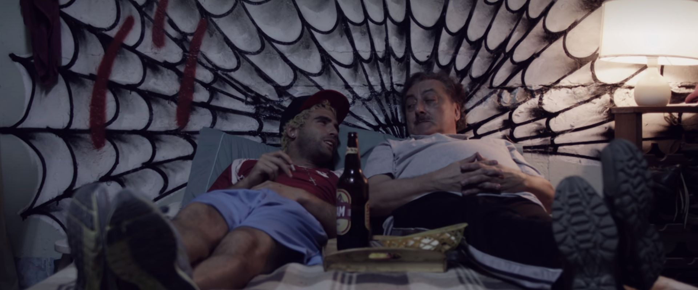

Marginal: Bienvenidos, siéntanse como en casa.
"El Marginal" cuenta dos historias en diferentes tiempos: una en el presente y otra en el pasado. La trama se centra en Miguel Palacios, un ex-policía que se infiltra en la cárcel de San Onofre haciéndose pasar por un preso llamado Pastor Peña. Su misión es sacar información sobre un secuestro y asesinato del pasado. Dentro de la cárcel, Pastor se mezcla con otros presos para ganarse su confianza y obtener pistas.
Conforme avanza la historia, Pastor se da cuenta de lo complicada que es la vida en la prisión, las peleas entre grupos de presos y los problemas con los guardias y el sistema de la cárcel. La serie toca temas fuertes como la violencia, la corrupción, la lealtad y la posibilidad de redimirse. Explora las historias y vidas de los internos, así como las relaciones de poder dentro y fuera de la cárcel. Además, usa flashbacks para revelar más sobre el secuestro y asesinato que Pastor está investigando. Conforme avanza la serie, se conocen mejor los personajes, sus razones y se descubren conexiones entre las diferentes tramas.